第7章 最终旗形¶
第 7 章 最终旗形
一旦趋势结束，交易者们在观察图表时便可看到趋势中的最终旗形。最终旗形反转比较常见，因为每个反转之前都是某种旗形，所以是一种最终旗形反转。在趋势反转之前，如果交易者明白是什么使得一个旗形很可能成为最终旗形，那么他就能预期到趋势反转并入场。
以下是最终旗形一些常见的特征：
• 旗形出现时，趋势已经行进了几十棒；所以趋势型交易者们可能开始获利了结，逆势型交易者们可能变得较为积极。双方将认为趋势已经过度，所以还可能形成一波较大的两条腿调整，并且演变为一段较大的交易区间，甚至反转。
• 旗形基本水平，表现出强双向交易的征兆，比如几条反向的趋势棒，棒线拥有突出的尾线，几次反转，以及棒线至少与前一棒重叠 50%。第二本书中关于交易区间的第四部分给出了更多双向交易的特征。
• 微型趋势线突破回撤是单棒或微型最终旗形。举例说明，当市场向上突破一条空头微型趋势线，然后向下反转时，那个单棒或双棒突破常常成为微型空头趋势中的最终空头旗形。如果抛盘在一两棒内失败，然后市场从一个更低低点、双重底或更高低点向上回转，那么这最后一次抛盘便是突破回撤，原来的小型突破变成微型空头趋势中的最终旗形。如果在突破最终旗形后出现反转，但是只回撤了几棒，然后趋势恢复，那么该回撤便成为一轮正在行进的趋势中的突破回撤，而非反转，最终旗形令市场反转的尝试失败。
• 最终旗形有时短暂反转，只是形成一个更大的旗形，它可能突破或反转。在最终旗形反转演变为其他形态之前，通常可以利用最终旗形反转赚得一笔刮头皮交易的利润，演变成的形态一般会形成另一个信号，该信号的方向则是任意的。
• 有时会形成两个连续的水平旗形，第二个旗形较小，对第二个旗形的突破可能引起一个楔形反转。
• 如果最终旗形形成于高潮之后，那么失败的突破可能不会超越前一趋势极点。举例说明，如果出现一波空头高潮，然后在低点上方形成一段水平的交易区间，那么该交易区间可能成为一个最终旗形，在一个更高低点或更低低点之后向上突破反转。
• 有时，一个最终旗形可能只有一两棒长，形成于一个强尖峰之后，该尖峰由几条异常大型的趋势棒构成（一个潜在的耗尽型高潮）。那个小旗形的突破常常在一两棒后反转，通常形成两条腿回撤，持续10棒或更多棒。这是一种可选的逆势架构，但是它不会可靠地引起趋势反转。那些大型趋势棒展现出很强的动能，常常在 10 到 20 棒内引起对趋势极点的测试。
单棒最终旗形可以是任意类型的暂停棒。举例说明，如果市场刚刚形成两波连续的卖出高潮，接下来一棒是一个多头十字星，即使它的低点低于卖出高潮的低点，该十字星也可能成为空头趋势中的最终旗形。如果随后的一棒或两棒是一个大型空头尖峰，然后市场向上反转，那么那条暂停棒便是一个单棒最终旗形。
• 紧凑交易区间常常成为最终旗形。任意横盘交易都拥有磁性拉力。由于突破通常失败，所以市场通常会被拉回区间之内，多头和空头都认为区间内存在价值。
• 有时没有突破，最终旗形只是增长为一轮新的趋势。这常常是连续高潮之后的反转。
• 交易者们看到市场处于过度状态，预期不久将出现调整，但是认为突破幅度仍可再做一笔刮头皮交易。所以他们在潜在最终旗形突破突破入场，但是打算在入场后很快离场，而不是持有头寸，等待波段。由于每个人都打算在小幅获利后离场，所以突破很快反转。
观察任意一张带有趋势反转的图表，你都会看到，趋势由一系列尖峰和回撤构成，尖峰和回撤都是旗形。如果你仔细研究那轮趋势中的最终旗形，那么你会发现，它给出了趋势即将结束的线索，要么进入交易区间，要么进入一轮反向趋势。交易区间可能包含延长的腿形，看起来像是趋势反转，但通常只是成为更高时间框架图表上的一个大型回撤。
P114
不过，那些腿形通常大到足以做一笔可获利的波段交易。交易者们不确定反转会成为一轮新趋势还是一波大型调整，对于那两种可能，他们的交易方式相同。在第一条或第二条腿形之后，他们部分或全部获利了结，并且准备在回撤期间加仓。如果在原来趋势方向形成一波很强的运动，那么他们可能会持有头寸，预期测试原来趋势极点。
每一波回撤都包含双向交易，但是，如果回撤基本水平、包含很多大部分重叠的棒线、区间内拥有若干棒、包含若干条反向棒线，那么双向交易就特别明显。最终旗形可以是任意大小的交易区间，包括只有一棒的交易区间，不过它通常至少包含5到10棒。双向交易意味着多空双方都认为这一价位存在开始交易的价值。空头正在积极做空，因为他们认为交易区间将会向下突破，多头正在积极买进，因为他们认为交易区间将会向上突破。每当价格缓慢靠近交易区间顶部，或者突破区间顶部后又快速上涨若干棒时，空头认为存在更高的做空价值，于是更加积极地做空。多头认为区间顶部有一点贵，他们的买进减少。结果使得空头能够推动价格回跌。当市场到达区间底部，或者向下突破时，相反的情况发生，多头认为存在更高的入场价值，但是空头认为价格太低，从而不再积极做空。这使得市场返回区间中部。所有交易区间中都发生相同的过程，包括多头和空头旗形，结果使得这些交易区间中部存在磁力效应，大部分突破尝试不会走得太远就被拉回交易区间内部。
当突破形成于趋势已经行进了几十棒之后，它常常成为趋势的最终旗形。突破之后，顺势交易者对获利了结更感兴趣，他们在再次入场前会等待较深的调整，逆势交易者将在趋势尝试恢复时逆势入场，因为他们预期至少形成两条腿调整。举例说明，如果有一轮多头趋势已经行进了几十棒，可能即将形成更大的调整、甚至反转，那么交易者们将注意观察它是否形成一个基本水平的多头旗形。由于多头趋势仍然有效，所以交易者们愿意在突破买进，但是只打算刮头皮，而不是做波段交易。在旗形内做空的空头将买回他们的空头头寸。他们的买进助长了市场的上涨，但是一旦市场到达某个阻力位，他们就会急切地再次做空。那个阻力位可能是固定数量的跳动数，他们认为多头将在那里退出多头交易，也可能是某个测量运动目标。入场后不久，多头便抛出自己的多头头寸，小幅获利。激进型空头看到的情况与多头相同，刚好在多头卖出的地方开始做空。由于多头和空头都预期价格下跌，所以没有人再买进，市场向下反转，至少形成一波刮头皮运动。如果跌势很强，那么多头就不再愿意买进，空头就不再急于获利了结，直到出现调整结束的征兆。反转可能引起回撤、更大的调整（比如交易区间）或者趋势反转。
之前我们在关于底部和顶部的第 3 章讨论过，最终旗形是由相同的基本行为产生的。举例说明，如果多头趋势中形成一个潜在的最终旗形，那么就在旗形形成前会出现一次上推。对该旗形的向上突破是对多头高点的测试。当市场向上测试时，如果介入的卖家多于买家，那么市场将在第二次上推后向下反转。尽管潜在的力量是相同的，但是最终旗形看起来可能大不相同，根据不同的特征可以划分为不同的形态。空头趋势中的最终旗形也是如此，它们就是一对下跌运动和一个向上反转。对最终旗形的空头突破是第二波下跌，是对暂停后形成最终旗形的空头趋势的力量的测试。
在多头旗形的多头突破后不久，很多多头和空头将会卖出，如果卖出的交易者足够多，那么市场将开始反转。如果空头反转架构形成，那么交易者们将更加自信地认为随后将出现更大的调整；更多多头会抛出他们的多头头寸，更多空头会开始做空。如果市场跌破空头反转棒 1 个跳动，触发向下反转，那么市场将被拉回那个最终旗形。市场可能停在那里，但是通常至少会形成一波两条腿的横向至下跌调整，而且常常形成趋势反转。如果旗形中形成一条很强的空头腿（卖压的征兆），或者此前市场已经向下大幅突破多头趋势线，那么更可能形成趋势反转。如果原来的趋势持续了 50 到 100 棒，那么反转更有可能演变为一个大旗形，而不是一轮反向趋势。记住，趋势拥有极大的惯性，倾向于拒绝所有反转尝试。然而，一般每次反转都比前一次大，最后，一次反转成功，令趋势反转，进入反向趋势。
延长的高潮常常在短暂的最终旗形突破后结束。举例说明，如果形成一个很强的四棒多头尖峰，如果尖峰中的实体较大，而且第四个实体通常最大，那么它常常会引起短暂的卖出，因为交易者们将把这个尖峰看作一个潜在的买进高潮。多头和空头都在等待这样的大型棒线。多头会把这种力量看作一个在非常高的价位部分获利了结的机会，激进型空头将会卖出，做空头刮头皮交易。结果常常是一波回撤。然而，由于多头尖峰如此强劲，所以，前一棒低点下方通常存在很强的买压。多头正在买进，重新满仓操作，空头正在买回他们的空头刮头皮头寸。结果是回撤只持续了一到几棒，成为一个高点 1 或高点 2 买进架构。多头将在前一棒高点上方买进，如果市场向上突破原来多头尖峰的顶部，那么很多人也会买进。
由于那个旗形之前是一个运动得太远、太快的强多头尖峰，所以很多交易者只把那个多头旗形突破看作一次刮头皮机会。他们会很快了结自己的刮头皮交易。他们的获利了结，加上激进型空头的做空，在多头旗形的一两棒突破之后，能够快速使市场向下反转。这个短暂的突破常常由一条或多条强多头趋势棒构成，所以是又一个潜在的买进高潮。如果足够多的交易者把它看作连续的买进高潮（原来的多头尖峰是第一个），那么很多人只会在至少包含两条腿和 10 棒的回撤形成后再次买进。很多人会做空，预期形成较大幅度的回撤。如果向下反转出现在一个明显的阻力位处，那么很多交易者会认为上涨只是对那个阻力位的一次买进真空测试，并且为趋势反转做好准备。他们将注意观察下跌运动的强弱。如果跌势缓慢，那么交易者们将预期它成为一波回撤，在做多前寻找多头趋势恢复的征兆。如果它包含很多空头实体，那么他们不会急于买进，于是市场就不得不下跌，以便找到更多买家。有时，市场将会进入一轮空头趋势，即便原来的多头尖峰非常强劲，最终旗形只有一顶，这种情况也有可能发生。很多反转发生于两推之后，特别是当两推形成双重顶时。两个顶部常常位于不同的价位，要么形成一个更高高点，要么形成一个更低高点，但是在一起的行为是一个双重顶，总应该是相同价格行为的不同表象。
P115
如果市场处于一个强尖峰之中，然后形成具有尾线或反向实体的一棒，那么交易者们常常预期出现最后的一波小推，然后是一波回撤。举例说明，如果有一个强空头尖峰，由收盘靠近低点的四条连续的大型空头趋势棒构成，那么很多交易者会在每一棒收盘价附近做空。如果下一棒有一条很长的下尾线或者一个多头实体，那么空头趋势未受损伤，但交易者们认为回撤在即。很多人会在这一棒的收盘做空，但是只会做刮头皮，预期那笔交易是尖峰中的最后一笔刮头皮交易。由于他们把这笔交易看作最后一笔刮头皮交易，所以他们接下来不打算再次做空，直到至少出现一波小幅回撤。没有人愿意继续在尖峰底部卖出，于是市场上涨，寻找一个足够高的价位，以便让空头再次做空。激进型多头知道这一点，在尖峰底部他们认为空头将买回他们的最后一个刮头皮头寸处买进。由于多头和空头都在买进，所以市场向上运动。通常，那一波上涨至少足以让多头以刮头皮交易退出他们的多头头寸，但是可能持续5 到 10 棒。由于它是强空头尖峰中的第一波回撤，所以上方存在卖家。当市场向上超越前一棒高点时，多头和空头将会卖出，卖出理由可能微不足道，因为双方都非常自信地认为回撤很快结束的几率非常高。多头和空头的卖出结果至少再形成一次下推，下跌运动甚至有可能成为一条通道，完成一波测量运动，测量基准是尖峰高度。另一种可能的极点情况，它可能只是一个最终旗形突破，引起向上反转。那么那个五棒空头尖峰与最终旗形有着怎样的关系呢？尖峰底部的那条尾线或多头棒，告诉交易者们在回撤前会再出现一次下推，下跌幅度可以做一笔刮头皮交易，但是市场很可能快速向上反转。也就是说，他们把下尾线或多头实体看作一个微型最终旗形，在较小时间框架图表上，它当然是一个最终旗形。交易者们不必观察较小时间图表来验证这一点，因为他们知道肯定是那位的，否则那条下尾线或多头实体不会形成。
最终多头旗形的突破有三种方式。第一种方式，突破强劲，向上超越多头趋势原有高点，然后市场在一个更高高点反转中向下反转。第二种方式，突破可能较弱，市场可能在前一高点下方向下反转，形成一个更低高点反转。最后一种方式，可能根本没有突破多少，甚至没有向上突破。举例说明，多头旗形可能形成一个高点 2 或高点 3 买进信号，但是入场棒在仅向上超越信号棒一两个跳动后向下反转，或者入场棒在没有超越前一棒高点的情况下便向下突破。如果多头旗形向下突破，那么突破通常是一个尖峰，随后是一条空头通道，延伸至某个测量运动目标。如果没有明确的突破，多头旗形只是逐渐增长为一条较大的空头通道，那么在某个点处，交易者们将会放弃之前对多头旗形的预期，把那条通道看作一轮空头趋势。当这种情况发生时，通常一开始会形成一个至少包含一棒的空头尖峰。当那条空头趋势棒形成时，经验丰富的交易者们会猜测它是否会强到引出一条空头通道，很多人会在先前棒线的高点上方做空，以防空头趋势形成。多头旗形，尽管从未向上突破，也是多头趋势中的最终旗形。
对于任意多头旗形，回撤型交易者都会买进，并且打算在测试趋势极点（最近的高点）时离场。他们喜欢在原来高点上方获利了结，但是却密切关注市场是否会在它的下方停止。如果那样的话，他们会快速获利了结，仅当出现另一波回撤时，他们才会再次买进。他们的卖出，加上他们在等待回撤时至少一两棒内不愿买进，结果形成一个更低高点，而不是一个更高高点。由于刮头皮者们通常是在前一高点以及略高于前一高点处获利了结，所以在多头趋势的大部分新高处都是找到获利了结者，而不是新的买家。结果使得大部分新高之后出现回撤，而不是延长的突破和新的上涨腿。不过，由于大部分反转尝试失败，所以大部分新高不会引起进入空头趋势的反转。反转常常看起来很强，但通常只是形成另一个多头旗形。多头将会在回撤买进，空头将会了结他们的空头刮头皮交易而获利，市场将再次测试高点。最后，某个多头旗形将成为最终多头旗形，随后形成一波较大幅度的调整或者反转，如果出现这种情况即将发生的征兆，那么经验丰富的交易者们将会做空。
类似地，空头趋势中的最终旗形也可能向下突破，然后向上反转形成一个更低低点或一个更高低点，或者在没有向下突破的情况下便向上突破。可能形成一个失败的低点 2 或低点3 做空架构，然后向上反转，表现为一条大型多头趋势棒。这个多头旗形成为一个新多头波段的开始，于是那个空头旗形将被看作空头趋势中的最终旗形，尽管它从未向下突破。多头突破表明交易者们认为总在场内交易已经从空头翻转为多头。
P116
如果有理由认为一个空头波段可能正在结束，然后开始形成一个空头旗形，那么交易者们可能认为那个空头旗形之后的低点 1 或低点 2 做空入场将会失败。如果他们预期这个空头旗形没有明显的空头突破，而是认为市场将套住空头，然后向上突破，那么他们可能利用低点 1 和低点 2 架构反向入场。举例说明，如果交易区间日形成一个楔形底，市场正开始向上反转，那么交易者们会预期楔形低点不会被跌破。由于他们认为趋势现在可能是向上的，所以他们希望在回撤买进。回撤可能小到只有一棒。由于可能形成两条上涨腿，所以第一条下跌腿的幅度应该不会很大。那个低点 1 做空架构应该失败，成为新多头腿中的一个小型更高低点回撤，这些多头将预期至少形成一波两条腿反弹，持续 10 棒或更长时间。低点 1 做空架构可靠的唯一时间是在强空头趋势的尖峰期中，决不是在反转形态之后。那个低点 1 做空入场很可能不会跌破楔形低点，而是在两条腿向上调整中形成一个小幅更高低点。因此，交易者们会在那条空头信号棒低点或其下方 1 到 3 个跳动处使用限价单买进，预期形成一个小幅更高低点，而不是可获利的低点 1 做空架构。在电子迷你中，他们的风险通常可以低至 4 个跳动。
随着向上反转继续，他们可能认为会形成一个低点 2 做空架构。但是，因为他们认为趋势已经反转进入多头趋势，所以他们预期那个低点 2 也会失败，随后价格将会上涨。他们仍然处于回撤买进状态，那可能包括一个小幅回撤，比如一个低点 2。这里，他们会再次设定限价单在低点 2 信号棒低点或其下方买进，在电子迷你中的风险大约是 4 个跳动。他们正预期这个空头旗形的突破幅度不会超过几个跳动，相反地，他们预期市场会继续上涨进入多头通道。这是一种最终空头旗形，因为它是空头趋势的最终旗形。空头认为它是一个空头旗形，但是只能让市场向下突破空头信号棒一两个跳动，然后该旗形将会继续向右上侧伸展，直到交易者们认识到它现在已经变成一条多头通道。在某个点处，当足够多的交易者认识到正在发生什么时，空头将会回补，通常会形成一个向上突破，然后是一波向上的测量运动。
一旦空头认为市场已经到达交易区间的顶部，或者多头趋势正在向下反转的过程中，他们将寻找高点 1 和高点 2 信号棒，然后在那些棒线的高点或其上方设定限价单做空。他们正准备在向上反弹时做空，甚至是非常小的反弹，比如高点 1 或高点 2。多头将准备在交易区间底部的低点 1 和低点 2 入场买进。如果之前是一轮空头趋势，那么当多头感觉市场正处于向多头波段反转的过程中时，他们也会在空头趋势底部的低点 1 和低点 2 买进。
如果高点 2 很可能失败，那么它为什么还会首先被触发呢？那是因为空方正打算在棒线上方做空，较少人会在略低于棒线高点处做空。他们设定限价单在前一棒高点及其上方做空。由于愿意在棒线高点下方做空的空头相对缺乏，所以多头没有遇到对手，能够推动市场超越前一棒高点，希望大量多头将以买进止损单入场。棒线高点的作用就像是一个磁力位，超越棒线的上推是一个微型买进真空。多头发现有数量巨大的空头等待在那里做空，而且有很多在低位买进的多头在那里获利了结。结果是那个高点 2 触发，但市场立即向下反转。那些在最后几个跳动买进的多头，很快看到超越前一棒高点的反弹非常乏力。因为市场走势并非他们预料的那样，所以他们离场，至少在几棒内不准备再次买进。他们对多头头寸的抛售加剧了下跌。
如果一个最终旗形反转触发，但是在一两棒内失败，那么它就成为一个失败的最终旗形。失败的最终旗形是原来趋势恢复的架构，所以是一个突破回撤。市场突破潜在的最终旗形之后，试图反转，但是只是小幅回撤，然后趋势恢复，而不是反转。举例说明，如果市场处于一轮多头趋势中，形成一个潜在的最终多头旗形并向上突破，然后开始向下反转，但是做空入场棒快速成为一条很强的多头反转棒，那么这是一个突破回撤做多架构。那条多头反转棒是突破潜在最终旗形之后的一波回撤，如果多头趋势运动得足够远，那么它将挣脱最终旗形的磁性拉力，交易者们将会寻找其他形态。如果反弹只持续了一两棒便再次向下反转，那么它就在原来的潜在最终旗形之后形成一个二次入场做空架构。如果反转成功，那么它就是一个最终旗形反转。如果反转失败，市场再次向上回转，那么市场很可能是在一条多头通道内，通道可能持续很多棒。
图 7.1 最终旗形反转
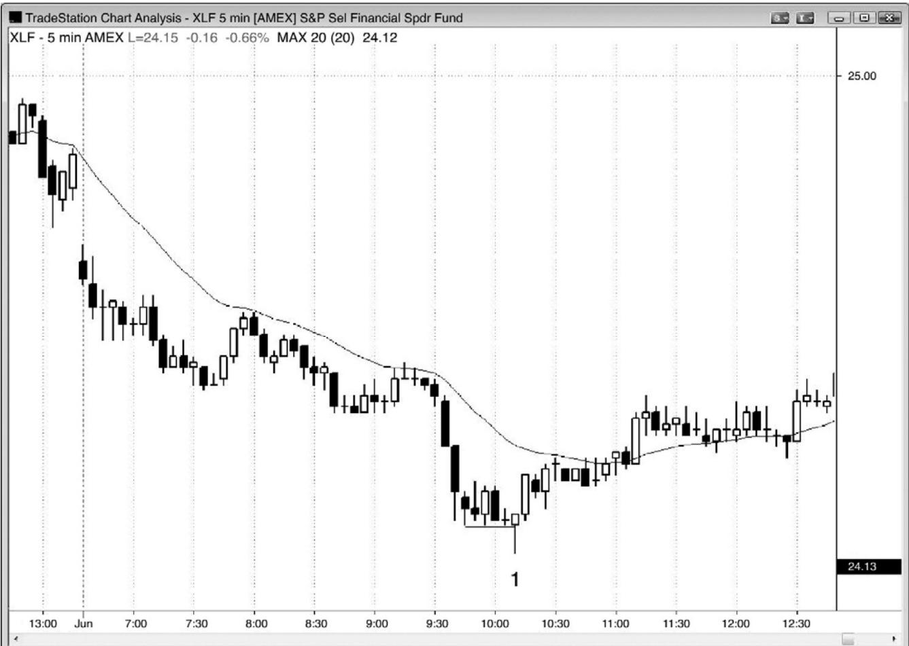
P117
如果一轮空头趋势已经行进了很长时间，那么随后形成的卖出高潮常常会引出最终旗形反转，至少是两条腿反弹。在图 7.1 中，开始起的两条下跌腿在棒 1 结束，所以可能是当日一个低点。在一波延长的运动之后，它突破了一个横向的空头旗形，所以这可能是一个最终旗形，可能引起向上反转。棒 1 是一条不错的反转棒，触发了最终旗形做多架构，使得交易者们预期至少形成两条上涨腿。当反转后的第一条上涨腿超越最终旗形时，将形成一些最佳反转，比如这里。接下来常常在原来空头旗形上方形成一个横盘旗形，然后新的多头趋势继续。有时市场会形成一波短暂的回撤，回到原来的空头旗形，有时新的多头腿中甚至没有暂停，在一个由一系列多头趋势棒构成的强尖峰中暴涨。当你看到这种类型的反转时，一定要把部分或全部头寸波段化，因为你很可能得到巨大的利润。
太平洋标准时间 7:30 左右到 9:30 左右的交易区间包含了两个小时的双向水平交易，是一个较大的最终旗形。突破之后，双向交易产生的磁性拉力倾向于把市场拉回那一价位。
棒 1 后面的入场棒收盘于前六棒的高点之上，并且超越了前七个收盘价，所以反转了很多高点和收盘价。在那些棒线做空的交易者们，要么被迫回补他们空头头寸，要么继续持有亏损头寸，他们很可能不久便认赔离场。另外，至少若干棒内他们不打算再次做空，而且在考虑再次做空之前，大多数人会至少会等待形成一波两条腿反弹。这使得市场成为单向市场，通常引起一波反弹，至少持续 10 棒和两条腿。
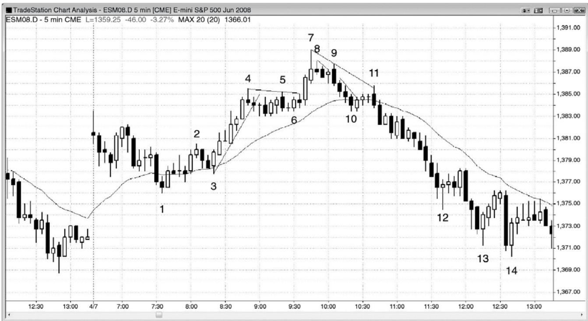
P118
反弹之后的紧凑交易区间常常成为最终多头旗形。图 7.2 中，截止棒 4 向上突破开盘价的反弹非常坚挺，棒 4 引出一段非常紧凑的交易区间。这里，对该旗形的强势突破结束于棒7，它是一波两条腿上涨（棒 5 是第一条腿），也是一个楔形顶（当天第一棒是第一次上推，棒 4 是第二次）。突破旗形的两条腿运动常常形成一个重要反转，一般至少持续两条腿。截止棒 10 的下跌在两条腿中，但是它只有一条逆势棒（棒 9），也就是说它很有可能只是两条较大腿形中的第一条腿。当两条腿运动处于紧凑通道内时，整条通常通常成为第一条腿。不管怎样，如果空头交易者们不确定，那么当市场在棒10跌至均线处时，他们会将自己的止损移至盈亏平衡点。
棒 9 向上超越小型多头十字星棒，触发一个高点 1 买进架构，但是，由于它形成于一波买进高潮和一个最终旗形顶部之后，所以经验丰富的交易者们预期它将失败。棒 8 和随后两棒构成一个较小的最终旗形，于是棒 9 成为这个三棒最终旗形的更低高点失败突破。出现一个微型买进真空，吸引市场超越那条高点 1 信号棒一两个跳动。强势空头预期那个高点 1 失败，正等待看自己是否有机会在信号棒高点及其上方做空。因此，当市场低于那一棒高点一两个跳动时，很多人会停止做空，愿意做空的交易者们的缺乏吸引市场上涨，寻找空头。一旦市场到达他们的目标（位于或略高于高点1信号棒），空头便积极做空，压倒多头，预期市场下跌。在棒 1 信号棒高点及其上方买进的多头立即看到市场的停顿和反转，于是他们抛出自己的多头头寸，助长了市场的跌势。他们相信短期顶部已经形成，至少若干棒内不会考虑再次买进。由于没有了买家，所以市场快速跌至均线和最终旗形（开始于棒 4 的交易区间）中点的支撑，在那里，空头将买回他们的空头头寸，多头又一次开始买进。由于跌势很强，所以买家寥寥无几，市场没有能力反弹。这些买家快速成为卖家（多头抛出他们新的多头头寸，空头再次做空），市场进一步下跌，寻找一个吸引买家的足够低的价位。
棒 10 和它后面一棒在均线处形成一个双棒反转高点 2 买进信号。经验丰富的交易者们不会在这个高点 2 买进，因为它前面是四条很强的空头棒（一条微型通道）。棒 11 是那个高点2 多头旗形的失败突破的信号棒。这是一种常见的行情。有些多头把从棒 7 高点到均线的回撤看作一个多头旗形。不过，一旦市场向下突破棒 10，多头便放弃那个观点，预期市场很可能形成一波向下的测量运动和两条腿，然后形成另一个买进架构。双棒空头尖峰（棒 11 和下一棒）之后是一条空头通道。根据后见之明，在从棒 1 开始的多头运动中，棒 4 交易区间变成一个最终旗形，聪明的交易者们会预料到这种可能性，把他们的部分空头头寸波段化。棒9 前一棒也是一个最终多头旗形，与棒 10 后面第二棒触发的高点 2 一样。
棒 2 处的低点 2 更低高点是一种类似的情形。空头把它看作开盘起下跌中的一个空头旗形，一个可能的更低高点和一轮空头趋势的起点，至少是一段可能的交易区间的顶部。一旦那个空头架构触发，然后市场反弹超越棒 2 高点，空头们便知道他们之前的预期是错误的。那个空头旗形失败，空头们预期形成一波反弹，至少持续两条腿，向上到达一个近似的测量运动目标。
棒 7 也是当天的第三次上推，当天第一棒是一个向上的缺口尖峰，棒 4 是结束于棒 7 的楔形通道中的第二次上推。
当棒 9 向上超越它前面的多头棒时，市场试图形成一个失败的最终旗形，那是一个突破回撤买进架构。然而，由于这个潜在做多架构的信号棒和前三棒中的两棒带有突出的尾线，所以在市场下跌之前，空头会将保护性止损一直设在棒 8 信号棒高点上方。一旦强空头趋势棒棒 9 收盘，他们就会把自己的止损移至它的高点上方。这是一个弱高点 1 买进架构，很可能失败，所以它不是一个买进架构。大部分交易者会在它的高点或其上方做空，此处显然如此。他们不会做多，不会退出自己的空头交易。
P119
棒12是一个微型最终旗形的例子。下跌尖峰中，交易者们正在空头棒的收盘做空，但是棒12前一棒带有很长的尾线。这提醒交易者们一波小幅回撤即将形成。激进型空头会在那一棒收盘做空，但是预期只会出现一波刮头皮运动，然后便回撤。在入场后的那一棒，他们买回自己获利的刮头皮头寸，他们的买进制造了棒 12 反转棒。激进型多头明白正在发生什么，于是他们在自己认为空头买回他们的空头刮头皮头寸的位置买进。多头只是在准备做一笔多头刮头皮交易。空头波段型交易者们也预期出现回撤，于是他们买回部分头寸获利。所有获得大量账面利润的交易者们在市场运动过程中部分获利了结，而且他们通常在自己预期形成小幅回撤的位置这样做。他们的买进加速了回撤。当多头抛出他们的多头刮头皮头寸，空头在回撤顶部做空时，市场不出所料地再次下跌。V 形底非常罕见，所以每个人急于卖出，知道至少再形成一次下推的可能性非常高。交易者们使用限价单在前一棒高点上方做空，使用止损单在前一棒低点下方做空。在另外每一个时间框架和每一种类型的图表上，还存在其他做空理由。有些交易者在棒 12 后面第四棒触发的低点 2 做空（有些人在那条多头棒下方做空，而有些人在双棒空头反转下方做空）。那些不现实地希望出现一波较大反弹的多头过早入场，现在在低点 2 抛出他们的多头头寸，至少在下跌几棒之前不愿再次买进。由于没有人打算买 进，所以市场快速下跌若干棒。
图7.3 三角形作为最终旗形
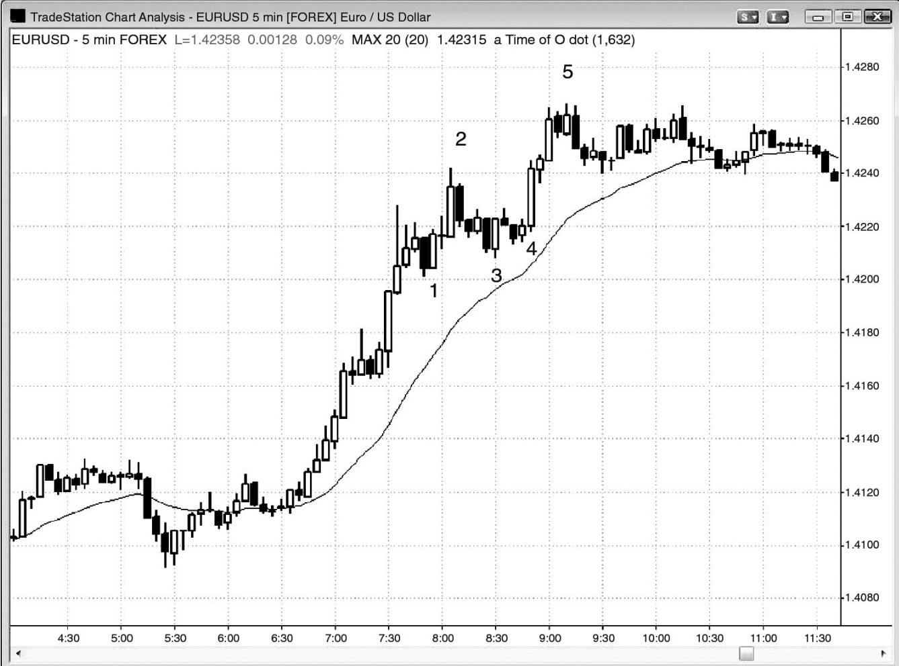
当看涨动能特别强时，最好只寻找买进架构，不寻找做空架构，直到空头已经表现出一些力量。
如图 7.3 所示，欧元/美元外汇在棒 2 形成一个最终旗形做空架构，但是上行动能很强，而且该旗形的长度只有 4 棒，所以并未突破重要的多头趋势线。那样一条空头趋势棒并不足以消除大量的上行动能，市场很可能横盘调整，然后反弹至一个新的高点。这很可能不会令市场反转，而只是成为向上突破棒 1 双棒反转后的一波回撤。当一个最终旗形架构未能令市场反转时，它成为一个失败的最终旗形，即一个突破回撤架构。这便是此处发生的情况。棒1 潜在最终旗形在棒 2 双棒反转处形成一个反转信号。反转入场触发，但是市场并未大幅下跌。相反地，市场横盘调整，形成另一个买进架构，这使得在棒 3 上方的买进成为一个失败的最终旗形架构的入场。市场向上突破棒 1 旗形，回撤，然后再次向上突破。
P120
棒3双棒反转形成一个高点2做多架构，与棒1形成一个双重底，在一轮强多头趋势中，这些理由足以让交易者们买进。保守型交易者把棒 3 看作从棒 2 开始的一条小型下降通道的一部分，他们会在那个小型双重顶空头旗形（由棒 3 双棒多头反转前后相邻的棒线构成）上方买进。对棒 3 的向上突破很弱，市场回撤至一个小幅更高低点。这是一个突破回撤架构，它使得该形成成为一个楔形多头旗形，其中棒 1 和棒 3 是头两次下推，也成为一个三角形（一出现第三次下推，交易区间便成为一个三角形）。那个三角形是水平的，它形成于一波延长的反弹之后。它可能包含足够的双向交易，产生足够的磁性拉力，将任意突破拉回交易区间之内。有些交易者把棒 4 看作棒 3 多头趋势棒和下一棒高点 2 入场之后一个突破回撤。这个多头旗形是一个潜在的最终旗形，棒 5 是反转架构。它是第三次上推，突破了一个单棒回撤，而那个单棒突破是一个单棒最终旗形。然而，上行动能仍然如此强劲，于是更有可能出现横盘调整，而不是反转。市场进入一段紧凑的交易区间，然后它可能再次向上突破，或者向下
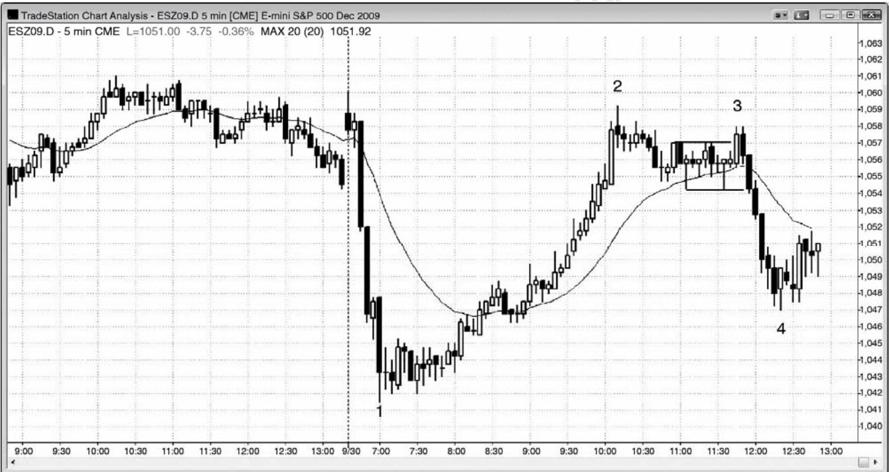
有时，最终旗形突破在一个更低高点处反转，而不是在一个更高高点处反转。图 7.4 中，截止棒 2 的反弹非常强劲，呈抛物线形，所以随后很可能形成一波至少两条腿的回撤（多头趋势中的回撤可能是横向的或者是向下的），至少持续 10 棒。市场在均线上方形成一段水平的交易区间，在棒 3 处突破。不过，突破失败，市场在一个双棒反转中向下反转。棒 3 突破是一个更低高点，而不是一个更高高点，但它仍然是多头趋势中的最终旗形。交易者们会在双棒反转下方做空。棒 3 也与棒 2 后面的小幅更低高点形成一个双重顶空头旗形。棒 2 未能超越开盘高点，棒 3 第二次尝试突破至当日一个新高，以失败告终。当市场两次试图做某件事情均告失败后，它通常做反向的趋势运动。
开盘形成一个巨大的双棒卖出尖峰，然后形成一条多头棒。任意一条趋势棒或一系列趋势棒，形成一个突破、一个尖峰、一个缺口和一波高潮。这波初始卖出高潮之后，在棒 1 形成第二波卖出高潮。连续的卖出高潮常常引起延长的调整，有时引起反转，比如这里。截止棒 1 的抛盘中最终旗形是那个单棒暂停，刚好形成于棒 1 前面。这一棒成为抛盘中的一个单棒最终旗形；虽然它是一条多头反转棒，而且它的低点低于前面的巨型双棒空头尖峰的低点，但它是空头趋势中的一个暂停，所以是一个空头旗形。在这样的自由落体市场中，连续的卖出高潮常常包含一个单棒或双棒最终旗形，随后是一波大型调整，甚至反转。知道连续卖出高潮通常引出大幅回撤的交易者们，在看到那个单棒暂停后，愿意在当日低点向上反转时买进。没有人会在那个低点卖出做空。剩余空头只会在回撤做空，而且至少是在 10 棒反弹之后。棒 1 中断了卖出行为，使它成为两波独立的卖出高潮，而不是一波卖出高潮。如果没有棒 1（译注：感觉作者说的是棒 1 前面的多头棒），那么卖出可能在棒 1 之后继续，至少持续一两棒。很多空头会在棒 1 收盘买回他们的空头头寸，预期形成一波反弹，到达他们会再次考虑做空的价位。激进型多头会在棒 1 收盘价做多，承担风险约等于棒 1 高度，预期市场测试棒1 高点，然后可能形成一波向上的测量运动，测量基准是棒 1 高度。棒 1 有 93,000 张合约，约为过去两天普通棒线平均成交量的 10 倍，所以是对尖峰和高潮型向上反转的支持。尖峰和通道趋势的变种尖峰和高潮在第一本书中讨论过。一个下跌尖峰，一个暂停，然后是又一个卖出高潮（棒 1），它的作用类似于尖峰和通道形态中的一条单棒通道。
P121
棒 1 之后的水平交易区间也是一个最终旗形，尽管它从未向下突破。一波卖出高潮之后，市场常常形成一个空头旗形，可能是水平的，也可能形成一条多头通道，有时，它会包含低点 1 或低点 2 做空架构，比如此处，但是没有坚持到底，所以没有空头突破。相反地，空头旗形向上突破，那是趋势反转的常见方式。在连续卖出高潮之后，十字星信号棒是疲弱的做空信号棒，激进型交易者会在它们的低点或其下方买进。由于它是最后一个空头旗形，所以它是一种最终旗形。它也是从一个单棒最终旗形向上反转，那个最终旗形是大型棒 1 卖出高潮之前的多头反转棒。太平洋标准时间上午 8:05，多头趋势棒向上突破空头旗形，完成反转。
图7.5 最终旗形有时在没有首先突破的情况下反转
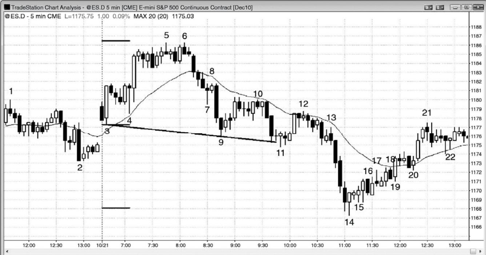
有时，最终旗形没有突破，而是继续回撤，最终形成一轮反向趋势。如图 7.5 所示，截止棒 14 是一波尖峰和高潮下跌，棒 14 是一条很强的多头反转棒。有些交易者认为尖峰开始于棒 6，结束于棒 9，有些交易者认为棒 9 和它前面的空头棒形成重要的尖峰，或者认为棒10 后面形成的双棒尖峰是重要的。所有空头尖峰都是卖压的重要征兆，对于截止棒 14 的高潮抛盘，哪一个尖峰贡献最大都没有关系（尖峰和高潮型尖峰和通道空头趋势）。接下来三次下推，形成一波抛物线运动，至棒14结束（棒9和棒11是头两条腿）。这常常引起一波延长的反弹，但是反弹通常从多头通道开始，比如此处。多头通道是空头旗形。
棒15是一个低点1，聪明的交易者预期那个做空架构失败。实际上，他们预期那个低点2 失败，楔形空头旗形失败，像所有通道一样，他们会在前一棒低点或其下方买进。机构不会在通道中棒线的低点下方卖出，因为那不是他们的做法。我怎么如此确信呢？原因如下，如果他们卖空，那么市场会下跌，但是，由于市场正在上涨，所以他们肯定是在买进。在某个点处，每个人都认识到这个空头旗形从未向下突破，空头最终买回他们的空头，有人在失败的低点 2 之后买回，有人在失败的楔形空头旗形之后买回。结果形成向上的突破，那发生在棒 19 多头趋势棒，再次发生在棒 20 上方。
多头认为棒3、9和11正在形成一个楔形多头旗形，当市场跌破棒11时，楔形失败，市场暴跌。空头突破只有一条腿，因为该形态演变为一个尖峰和高潮底。
从棒 14 开始的四条连续多头趋势棒显示出买压。第四棒向上突破一个失败的低点 1。棒17 是一个低点 2 或低点 3 架构，但是没有触发做空，而是在一棒后向上突破。棒 18 是一个楔形空头旗形架构，只触发了一个跳动，然后市场在棒 19 向上反转并向上突破。棒 20 从一个均线缺口棒做空架构向上反转，从那一棒开始形成一个尖峰，包含三条多头趋势棒。不像正在增长的空头旗形中之前的多头突破，这次突破拥有坚持到底，表现为连续的多头趋势棒。这一点说服大部分交易者市场现在正处于总在场内多头状态，他们不再寻找对空头旗形的突破。
棒 12 是一个多头旗形的起点，跟在从棒 11 低点开始的强上涨运动之后。棒 12 之前的空头棒是第一次下推，棒 12 后面的两条空头棒形成第二次下推，形成一个可能的高点 2 多头旗形，可能引出第二条上涨腿。下一棒是一条多头棒，所以是一个双棒反转买进信号，但是市场非但没有向上形成第二条上涨腿，而是形成一条强空头趋势棒，向下突破。那一棒使多头放弃他们之前的预期，于是至少若干棒内他们不打算再次买进。棒13是多头旗形空头突破后的一波回撤，是截止棒 14 的抛物线楔形反转的起点（棒 9、11 和 14 是三次下推）。
P122
当空头旗形向上突破时，比如棒 19，多头需要一条多头趋势棒，它的收盘至少比旗形顶部高几个跳动，以便让空头放弃他们之前认为那波反弹只是空头趋势中一波回撤的预期。类似地，当多头旗形向下突破时，交易者们希望看到一条强空头趋势棒，它的收盘比旗形底部低几个跳动，比如棒 13 前面倒数第二棒。交易者们看到高点 2 多头旗形形成，但是那条空头趋势棒的收盘价远低于该旗形，交易者们认为之前的看涨预期不再有效，市场很可能下跌，至少形成一两条小型腿。
图 7.6 多头最终旗形的空头突破
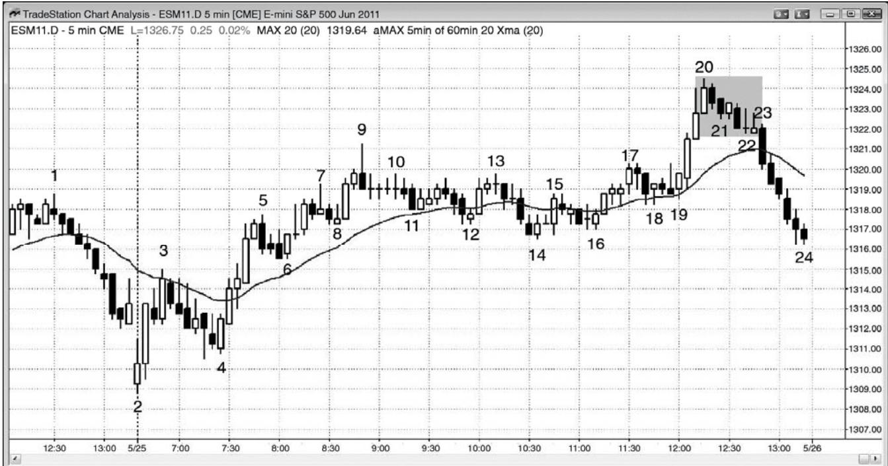
有时，交易者们希望在多头旗形买进，但是买进架构一直没有触发，市场向下突破。如图 7.6 所示，有一波很强的上推至棒 20 结束，当市场开始回撤时，交易者们正在寻找买进架构，原因是在如此强劲的多头尖峰之后，市场很可能至少测试高点。然而，市场一直没有向上突破截止棒 22 的微型下降通道，而是在棒 23 向下突破。那使得从棒 20 到棒 22 的运动成为多头趋势的最终旗形，尽管它从未形成多头突破。一旦大型空头趋势棒棒 23 形成，多头便放弃至少应该再出现一次上推的预期，而是认为市场至少会形成一波向下的测量运动，测量基准是旗形高度。空头也看到那个空头突破，预期也是相同的。由于下方若干点没有人买进，所以市场快速下跌，进入收盘。当市场下跌时，回撤的缺乏触发了动能卖出程序，增加了抛盘的力度。
一旦强多头尖峰中出现一棒拥有很长的上尾线或空头实体，那么交易者们通常会在收盘买进，预期市场在调整前形成最后一波刮头皮运动。棒 20 前一棒有一条很长的上尾线，敏锐的交易者们猜测它是否是市场不久既要回撤的征兆。由于棒 20 也是从棒 14 低点开始的第三次上推，所以交易者们怀疑它可能是一个高潮顶。然而，如果市场已经在回撤期间形成一个合理的买进架构，那么他们可能会将买进止损单设在信号棒上方，以确保做多。市场一直没有向上超越前一棒高点，因此，希望使用买进止损单在前一棒高点上方入场的多头一直未能入场。
棒 15、17 和 20 形成一个抛物线楔形顶，那是一种买进高潮。
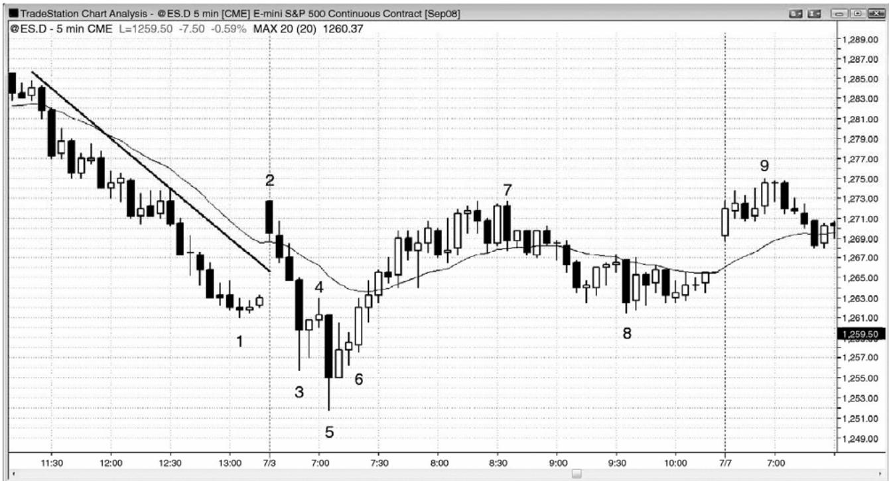
P123
小型最终旗形可能形成开盘反转。图 7.7 中，市场开盘向上跳空，超越空头趋势线。棒3 是一条巨大的空头趋势棒，前面是另外三条强空头趋势棒。棒 2 向上突破空头通道失败。
棒 4 是一个小型空头旗形的做空架构。至此为止市场的高潮行为，加上昨天的趋势线突破，交易者们正预期该形态成为一个最终旗形，在测试棒 1 空头低点之后，可能会引起向上反转。
棒 5 是又一条巨大的空头趋势棒，棒 6 是一个 ii 做多入场，预期反弹至少持续 10 棒，至少包含两条上涨腿。棒 5 大约拥有 105,000 张合约，约比平均成交量或近期普通棒线的成交量大 10 倍，因此，预示着可能形成一个连续卖出高潮底。第二条腿于次日在棒 9 结束。大型空头趋势棒所展现的下行动能的力量，通常会使交易者们推动市场下跌，在一两天内对低点进行测试。虽然这里没有给出，但是棒 9 高点在那天晚些时候引起一波抛盘，跌至远低于棒 5 低点的价位。交易者们寻找连续卖出高潮，作为买进机会。很多空头会在棒 5 收盘价附近买回他们的空头头寸，而激进型多头则在那里做多。有些交易者在棒 6 向上突破多头 ii 形态时买进，预期二次尝试从昨日低点向上反转可能形成当日一个低点。他们所承担的风险可能与棒 5 一样高，也可能为两点或三点。他们的利润目标包含棒 5 高点，对均线的测试，基于棒5高度的上涨测量运动目标，以及当天一个新的高点。
图7.8 双棒最终旗形
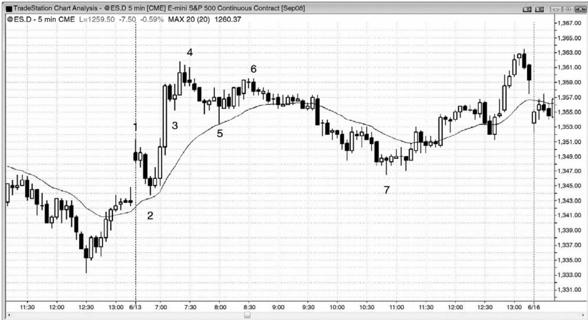
P124
单棒或双棒最终旗形可能引起巨大的反转，甚至是在强多头尖峰之后。这种情况更有可能发生在开盘时，开盘时常常见到迅猛的反转。图 7.8 中，棒 3 是一波双棒回撤，由于之前是一条巨大的多头趋势棒，可能代表着一波买进高潮，所以棒3可能是一个最终旗形。
棒4是一个ii架构，预期最终旗形向下突破，引出两条腿延长调整，这里果然如此。棒3 多头旗形结果成为最终旗形，它的突破失败，在棒 4 之后向下反转。注意，那个 ii 形态的第二棒有一个空头收盘，当交易者打算做空时，那总是必需的。
截止棒4高点的强劲动能使得交易者们驱动市场上涨，在当天晚些时候测试趋势极点。
棒 3 到棒 5 演变为一个较大的楔形多头旗形，其中棒 3 是第一次下推，棒 5 是第三次。第二次下推是棒 5 之前倒数第三棒。当市场在棒 6 更低高点向下反转时，这成为一个最终旗形。
截止棒 6 的反弹是一个楔形空头旗形和更低高点重要趋势反转，其中棒 5 前一棒是第一次上推。
棒 7 从一条内包棒向上反转，那条内包棒是下跌波段的最终旗形。
图7.9 小型最终旗形常常演变为较大的最终旗形
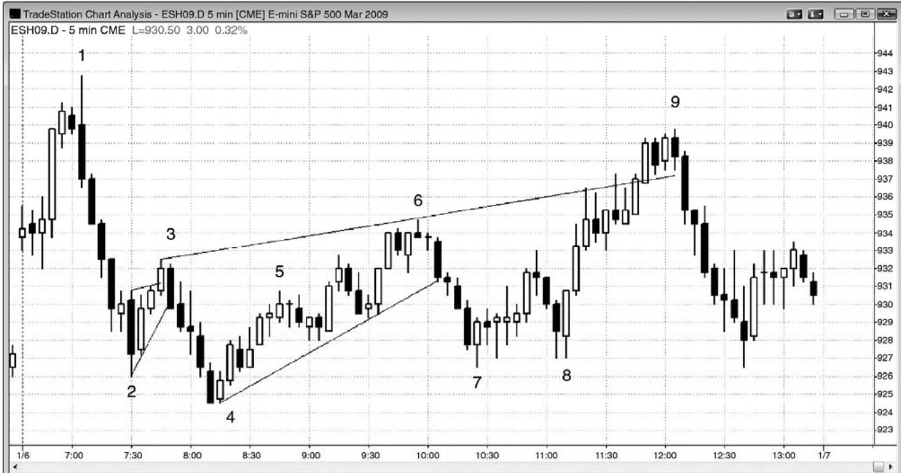
如图 7.9 所示，棒 2 是一个成功的空头刮头皮机会，它突破了之前的单棒最终旗形。然后，该形成演变为一个较大的楔形空头旗形（又一个最终旗形），结束于棒3。第一条上涨腿是第一个小型最终旗形（棒 2 之前的多头内包棒）的顶部。第二条腿是棒 2 之后的大型内包棒。那条多头棒有一条不长的上尾线，下一棒拥有一个较小的实体。对于从棒 2 低点到棒 2之后的多头棒的顶部上涨运动，那条尾线和较小的棒线形成一次暂停。第后一次上推是棒3。在较小时间框架图表上，这或许是更为清晰的一个楔形，但是也可从这张图上推断出来。有些交易者把这个形态看作一个简单的低点 2 做空架构，其中棒 2 是低点 1 入场棒。
市场在棒 4 向上反转，该形态增长为一个较大的楔形空头旗形，结束于棒 6。第一次上推至棒3结束，下两条上涨腿结束于棒 5（或者它后面的波段高点）和棒6。有些交易者把棒5 看作第一次上推，把棒 6 看作第三次上推。结束于棒 5 的小幅尖峰和通道上涨包含两条小型腿，棒 5 之后截止棒 6 的反弹包含两条更为清晰的腿形。
对那个空头楔形的突破产生一笔成功的刮头皮交易，但是没有形成新的波段低点。棒 7更高低点重要趋势反转被棒 8 测试，棒 8 与棒 7 形成一个双重底多头旗形，是更高低点重要趋势反转的一个二次入场。随后一波反弹形成一个更大的空头楔形，结束于棒 9。头两条上涨腿是棒 3 和棒 6 高点。在棒 3 第一次上推之后，棒 4 处形成一个更低低点，但那没有关系，因为这是一个常见的楔形变种。
为什么坚持认为看到的所有形态都是越来越大的旗形呢？因为它们在那里，而且市场正在告诉交易者们它还没有反转进入一轮强多头趋势。在尝试向上突破棒 8 双重底多头旗形和头肩底时，多头失败。市场在这个上涨尖峰之后的通道顶部棒 9 向下反转，也是刚刚向上突破从棒 3 到棒 6 的趋势通道线后的失败。这个头肩底的行为与大部分头肩底一样。它成为一个空头旗形（这一个略微上倾，所以它更像是一个楔形，而不是一个三角形）和一个延续形态，而不是一个反转形态。次日，市场向下突破棒4低点。
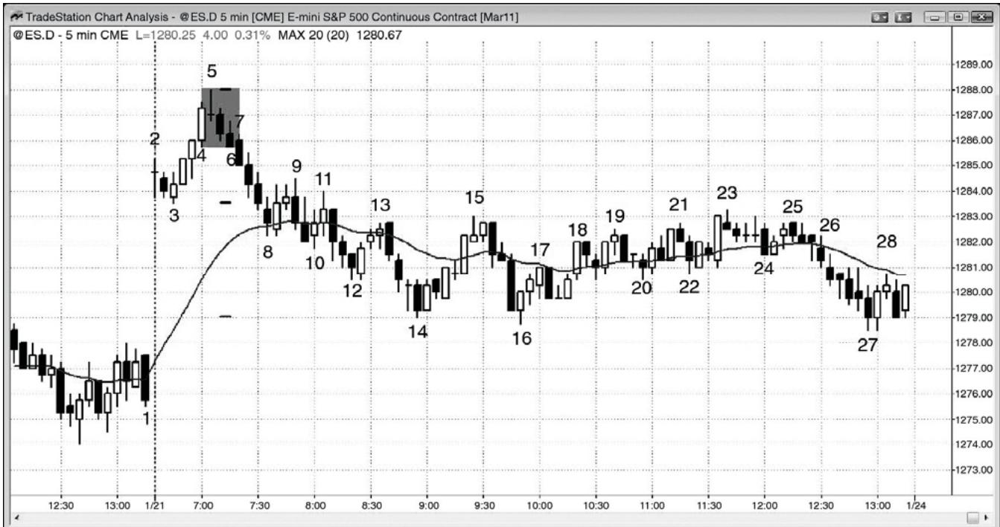
如图 7.10 所示，在截止棒 5 的上涨缺口和强多头上涨尖峰之后，交易者们不确定市场是会向下反转，形成当日高点，还是形成一个高点 1 多头旗形，然后形成一条多头通道。当市场从棒 5 高点回撤时，他们正仔细观察着。从棒 5 到棒 6，交易者们认为市场可能正在形成一个多头旗形。然而，棒 7 是一条大型空头趋势棒，收盘于低点，且收盘价低于棒 4 大型多头趋势棒的低点。棒 7 收盘价比它前一棒的收盘价低了若干个跳动，所以是尝试形成一个突破缺口。很多交易者在棒 7 刚收盘便做空，将止损设在它的高点上方，预期市场正向总在场内空头翻转，很可能出现坚持到底卖出。棒 5 可能是当日高点，如果市场跌破当日低点棒 3，那么可能形成一波向下的测量运动。此时，大部分交易者认为棒 5 很可能是当日高点。下几棒的坚持到底说服交易者们市场现在处于总在场内空头状态。他们正预期市场向下突破开盘区间的底部棒3，然后形成一波向下的测量运动。到棒14为止，刚好完成一波从开盘区间突破起的测量运动，很多空头在那里获利了结。
由于交易者们把棒 5 到棒 6 看到一个多头旗形，所以它是反弹的最终旗形，尽管从未向
上突破。
棒 16 是一个双重底，或者说略低低点重要趋势反转，但是接下来是一段交易区间，而不是一个多头旗形。重要趋势反转之后常常是交易区间，而不是反向趋势。
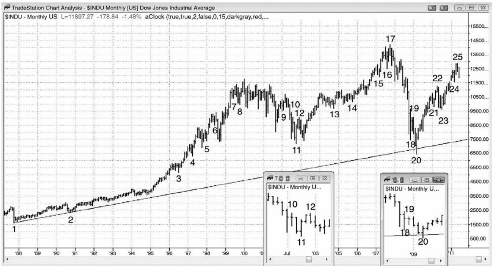
图7.11所示道琼斯工业平均指数中，高潮之后形成很多单棒和双棒最终旗形。有些最终旗形引起了反转，比如在棒 8、12、16 和 19（插图所示为棒 12 和棒 19 的特写），有些最终旗形引起了回撤，比如在棒 5、10（左侧插图显示一个特写）、13 和 21。有些最后只是成为普通旗形，而不是运动的最终旗形，比如棒4、15和23，有些触发了反转，但是未能令市场反转，只是成为趋势中的回撤（棒 13 和 21 是失败的最终旗形的例子，因为市场在那些旗形后面向下反转，但是反转失败，多头趋势在棒 14 和 23 恢复）。一旦出现一波高潮，然后形成一个短小的旗形，然后那个旗形被突破，那么突破常常强到足以成为另一波高潮。连续高潮一般会引起反转，大约持续 10 棒，大约包含两条腿。当它们出现在重要支撑位或阻力位时，他们可能引起强反转，比如在棒 20。当市场向下突破棒 19 时，我告诉很多朋友它可能引起很强的多头反转，原因是有一条 20 年长的多头趋势线刚好位于棒 18 空头低点下方。还有棒11 低点的支撑，它引出一个双重底多头旗形。交易者们注意到在棒 25 可能形成一个更低高点，很多人会把它看作一个潜在的头肩顶的右肩。在过去的一两个月里，我不断告诉朋友们棒 24 可能是反弹的最终旗形。如果那样的话，反转应该持续约 10 棒（10 个月），而且至少包含两条腿。市场应该会在棒22高点、棒23低点、均线（未画出）或棒20低点找到支撑。
P126
（内容移至上页）
P127